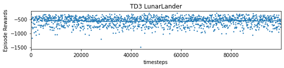
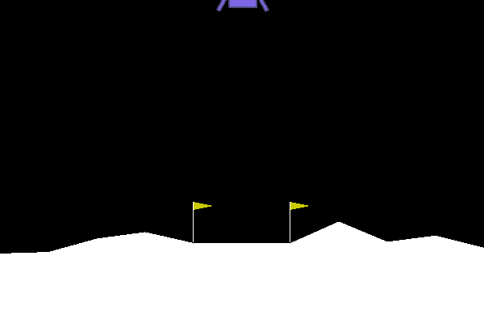

I have just read about this new release. This is a complete rewrite of stable baselines 2, without any reference to tensorflow, and based on pytorch (>1.4+).
There is a lot of running implementations of RL algorithms, based on gym. A very good introduction in this blog entry
import gymfrom stable_baselines3 import A2Cfrom stable_baselines3.common.monitor import Monitorfrom stable_baselines3.common.callbacks import CheckpointCallback, EvalCallback# Save a checkpoint every 1000 stepscheckpoint_callback = CheckpointCallback(save_freq=5000, save_path="/home/explore/git/guillaume/stable_baselines_3/logs/", name_prefix="rl_model")# Evaluate the model periodically# and auto-save the best model and evaluations# Use a monitor wrapper to properly report episode statseval_env = Monitor(gym.make("LunarLander-v2"))# Use deterministic actions for evaluationeval_callback = EvalCallback(eval_env, best_model_save_path="/home/explore/git/guillaume/stable_baselines_3/logs/", log_path="/home/explore/git/guillaume/stable_baselines_3/logs/", eval_freq=2000, deterministic=True, render=False)# Train an agent using A2C on LunarLander-v2model = A2C("MlpPolicy", "LunarLander-v2", verbose=1)model.learn(total_timesteps=20000, callback=[checkpoint_callback, eval_callback])# Retrieve and reset the environmentenv = model.get_env()obs = env.reset()# Query the agent (stochastic action here)action, _ = model.predict(obs, deterministic=False)
Issues and fix
CUDA error: CUBLAS_STATUS_INTERNAL_ERROR
Downgrade pytorch to 1.7.1
to avoid RuntimeError: CUDA error: CUBLAS_STATUS_INTERNAL_ERROR when calling cublasCreate(handle)
pip install torch==1.7.1
RuntimeError: CUDA error: invalid device function
!nvidia-smi
Thu Mar 25 09:13:49 2021
+-----------------------------------------------------------------------------+
| NVIDIA-SMI 450.102.04 Driver Version: 450.102.04 CUDA Version: 11.0 |
|-------------------------------+----------------------+----------------------+
| GPU Name Persistence-M| Bus-Id Disp.A | Volatile Uncorr. ECC |
| Fan Temp Perf Pwr:Usage/Cap| Memory-Usage | GPU-Util Compute M. |
| | | MIG M. |
|===============================+======================+======================|
| 0 Quadro RTX 4000 Off | 00000000:01:00.0 On | N/A |
| N/A 41C P5 18W / N/A | 2104MiB / 7982MiB | 32% Default |
| | | N/A |
+-------------------------------+----------------------+----------------------+
+-----------------------------------------------------------------------------+
| Processes: |
| GPU GI CI PID Type Process name GPU Memory |
| ID ID Usage |
|=============================================================================|
| 0 N/A N/A 1153 G /usr/lib/xorg/Xorg 162MiB |
| 0 N/A N/A 1904 G /usr/lib/xorg/Xorg 268MiB |
| 0 N/A N/A 2076 G /usr/bin/gnome-shell 403MiB |
| 0 N/A N/A 2697 G ...gAAAAAAAAA --shared-files 54MiB |
| 0 N/A N/A 7220 G ...AAAAAAAAA= --shared-files 84MiB |
| 0 N/A N/A 57454 G /usr/lib/firefox/firefox 2MiB |
| 0 N/A N/A 59274 C ...ablebaselines3/bin/python 1051MiB |
+-----------------------------------------------------------------------------+
CUDA version is 11.0 on my workstation.
!nvcc --version
nvcc: NVIDIA (R) Cuda compiler driver
Copyright (c) 2005-2019 NVIDIA Corporation
Built on Sun_Jul_28_19:07:16_PDT_2019
Cuda compilation tools, release 10.1, V10.1.243
There is an impressive documentation associated with stable baselines 3. Quickstart
Tips and tricks
This page covers general advice about RL (where to start, which algorithm to choose, how to evaluate an algorithm, …), as well as tips and tricks when using a custom environment or implementing an RL algorithm.
which algorithm to choose 1st criteria is discrete vs continuous actions. And 2nd is capacity to parallelize training.
Discrete Actions
Discrete Actions - Single Process
DQN with extensions (double DQN, prioritized replay, …) are the recommended algorithms. We notably provide QR-DQN in our contrib repo. DQN is usually slower to train (regarding wall clock time) but is the most sample efficient (because of its replay buffer).
Discrete Actions - Multiprocessed
You should give a try to PPO or A2C.
Continuous Actions
Continuous Actions - Single Process
Current State Of The Art (SOTA) algorithms are SAC, TD3 and TQC (available in our contrib repo). Please use the hyperparameters in the RL zoo for best results.
Continuous Actions - Multiprocessed
Take a look at PPO or A2C. Again, don’t forget to take the hyperparameters from the RL zoo for continuous actions problems (cf Bullet envs).
Creating a custom env
multiple times there are advices about normalizing: observation and action space. A good practice is to rescale your actions to lie in [-1, 1]. This does not limit you as you can easily rescale the action inside the environment
This could be useful when you want to monitor training, for instance display live learning curves in Tensorboard (or in Visdom) or save the best agent.

Atari game such as pong (A2C with 6 envt) or breakout
And after that some technical stuff such as: * Learning Rate Schedule: start with high value and reduce it as learning goes * Advanced Saving and Loading: how to easily create a test environment to evaluate an agent periodically, use a policy independently from a model (and how to save it, load it) and save/load a replay buffer. * Accessing and modifying model parameters: These functions are useful when you need to e.g. evaluate large set of models with same network structure, visualize different layers of the network or modify parameters manually. * Record a video or make a gif
Make a GIF of a Trained Agent
pip install imageio
and this time the lander is getting closer to moon but not at all between flags. 